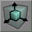

Brush Scaling

|
One of the interface modes in the UnrealEd toolbox. This mode lets you scale brushes. Note that many mappers have found this tool to be buggy: scaling a brush in one axis sometimes causes it to grow in another axis by a non-integer amount. Suggested alternatives are vertex editing, numeric scaling and facedrag mode, all explained below. (this is tarquin's personal crusade... don't use brush scaling!) |
Visual Scaling
You must select the brush to scale and keep the CTRL key pressed.
Then move the mouse over one of the Orthogonal (2d) view, while having the left button or right button pressed.
Left button produces an horizontal scaling ,while right button produces a vertical scaling.Depending on which of the orthogonal view you're operating the brush will be scaled in one of its 3 axes.
Brush are scaled around their pivot point, which can be set outside of the brush.
Alternatives
Numeric Scaling
Enter the scaling factors manually in the Brush properties, MainScale & PostScale.
See also Brush Transformation
Vertex Editing
Select two corners and stretch it out. (see vertex editing for more detail...)
Facedrag Mode
This is an experimental mode which can only be accessed with a console command. See Face drag mode.